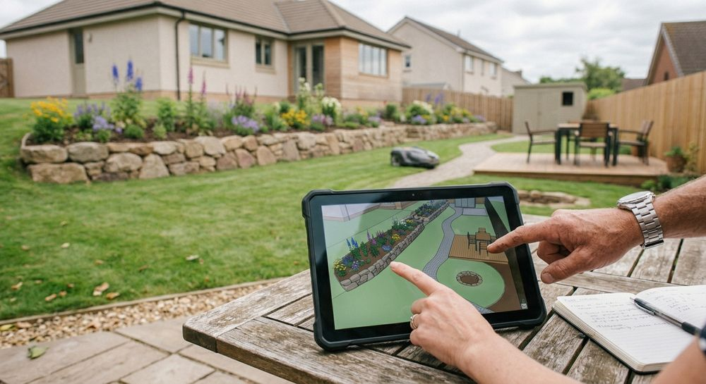
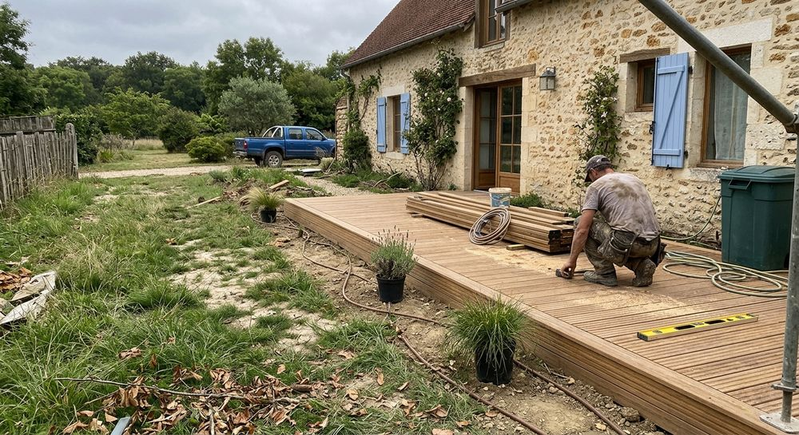

Prestations
Des conseils et un suivi pour chaque projet de jardin
Particuliers, architectes paysagistes, entreprises d’espaces verts ou collectivités : Avis Vert accompagne vos projets avec un regard de professionnel du végétal.



Pour les particuliers
Réussir votre jardin, à votre rythme
- Conseil et accompagnementAménager votre jardin vous-même, avec l’appui d’un professionnel : le « faire soi-même » accompagné.
- Végétaux et fournituresUne recherche de végétaux et de fournitures de qualité professionnelle.
- Suivi technique et financierUn regard sur les projets paysagers que vous confiez à une entreprise.

Pour les architectes paysagistes et maîtrises d’œuvre
Un relais sur vos chantiers
Suivi de travaux
Une présence technique pour faire avancer le chantier selon le projet.
Contrôle des réalisations
Vérification du respect des exigences architecturales.
Solutions techniques
Conseils et propositions pour lever les points techniques du projet.
Pour les entreprises d’espaces verts et les collectivités
Un renfort quand l’activité s’intensifie
Conduite de travaux
Pour absorber les surcroîts d’activité.
Apport de technicité
Un savoir-faire de terrain mis au service de vos équipes.
Un projet à discuter ?
Dites-nous en quelques mots ce que vous avez en tête : Avis Vert vous répond.